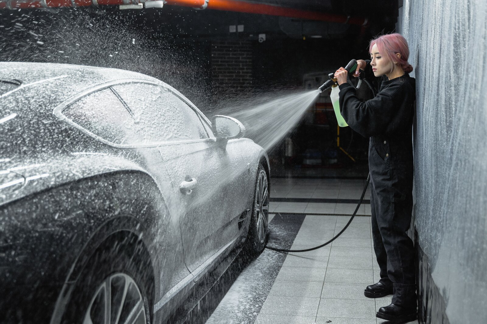
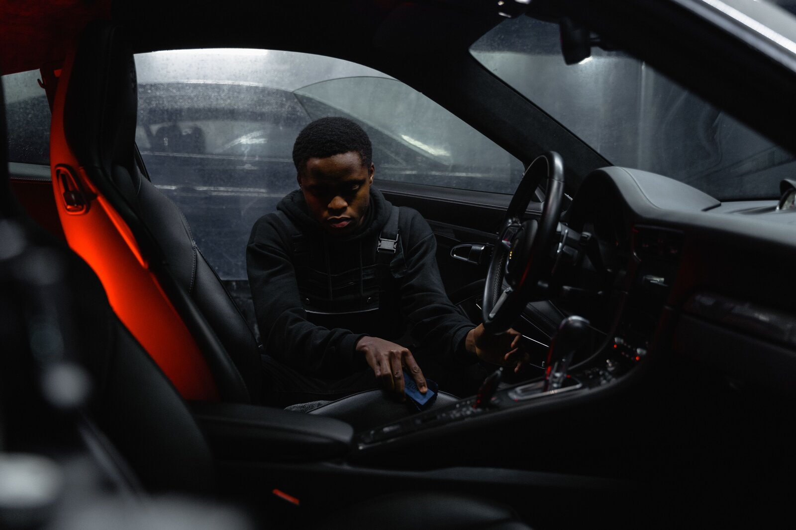
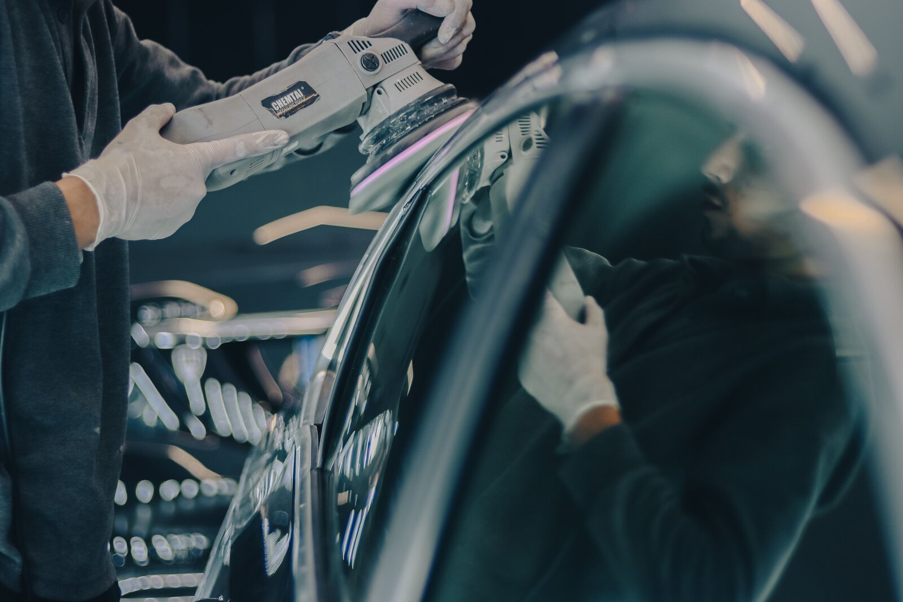
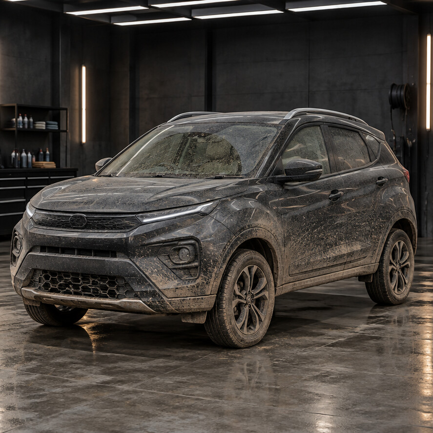

THE EVERYDAY RESET
Wash & refresh
A foam pre-wash, careful contact wash, wheel cleaning and streak-free finish. Small details. A big difference.
Enquire about a wash
For the everyday drive. And the pride
you take in it.
Assam's rain. Highway dust. The school run. Your car takes it all in its stride. Let us take care of what the journey leaves behind.
From a careful foam wash to a complete paint revival, we bring patient hands, the right process and attention to the parts most people miss.
Find the right care for your carGentle wash methods. Separate wheel tools. Fresh microfibre for the finish.
We inspect your car, explain the work and confirm your quote before starting.
Care that makes sense for daily drivers, family cars and weekend favourites.
Choose a fresh start, a deeper reset
or protection for the road ahead.
A foam pre-wash, careful contact wash, wheel cleaning and streak-free finish. Small details. A big difference.
Enquire about a wash
Dust in the seams. Spills on the seats. Everyday life in every corner. A thorough cabin clean brings back the comfort.
Enquire about interior care
Careful polishing to refine dull paint and light swirl marks. Ceramic coating or PPF for an extra layer of protection, tailored to your car.
Discuss paint protection
Move the handle. Let the finish
speak for itself.

Illustrative transformation. Results depend on paint condition and selected service.
A closer look at the care,
the craft and the cars.
A finish that catches the light
No guesswork. No surprise extras.
Just a thoughtful approach, start to finish.
Tell us how you use your car. We check its condition and recommend the care it needs.
We agree on the service, price and expected completion time before the work begins.
Each surface gets the right tools and treatment, with care for trims, seams and edges.
A final walk-around, a few practical care tips, and your car ready for its next journey.
Start with what your car needs.
Your regular reset, done with care.
Inside and out. A fresh start.
Refine the gloss. Protect the finish.
Machine polishing, headlight restoration and paint protection film (PPF) are quoted after inspection.
Indicative demo prices in INR. Final pricing, applicable taxes, coating specification and completion time are confirmed after inspection. Larger vehicles and heavily soiled interiors may cost more.
“The mud from our weekend trip was everywhere. The car came back looking fresh, and the cabin felt lovely again.”
Bijni · Maruti Baleno
“They explained what my paint needed before suggesting a service. That clarity made the whole experience easy.”
Bongaigaon · Hyundai Creta
“The seats, the door edges, even the little corners around the console. You can see where the time went.”
Gerukabari · Tata Nexon
A quick WhatsApp enquiry helps us confirm availability and reserve enough time for your service. Walk-in availability can vary.
For everyday road dust, start with a Signature wash. For stained seats or a neglected cabin, choose a Full detail. Send photos on WhatsApp for advice about dull paint, ceramic coating or PPF.
No. Light swirl marks and surface defects may improve with correction. Deep scratches, exposed primer and paint chips can need bodywork. An inspection sets realistic expectations.
No. Ceramic coating helps with surface protection and easier maintenance, but does not make paint scratch-proof. Regular careful washing is still essential.
Share your car model, service requirement and clear photos. We can discuss an estimate; the final scope and quote are confirmed after inspecting the car.
Tell us about your car.
We'll take it from there.
India · Serving Bijni & nearby areas
Open location in Google MapsArea map. Message us for the exact studio pin before visiting.